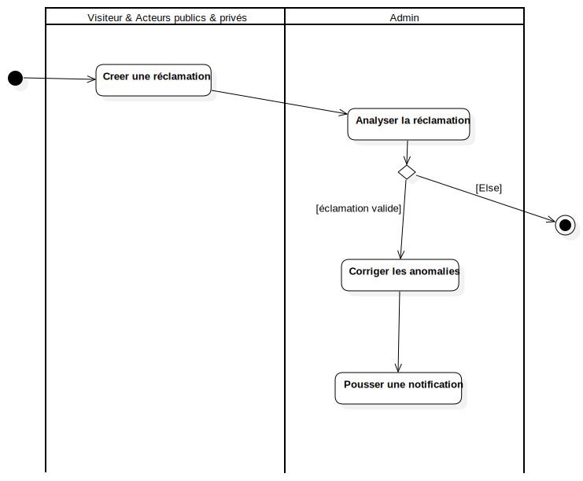

Activity duag: Service Maintenance
UMLActivity
Smart Tourisme
::
Activity duag: Service Maintenance
Description
none
Diagrams

Service Maintenance Activty diag
Groups
Visiteur & Acteurs publics & privés
Admin
Nodes
InitialNode1
ActivityFinalNode1
Pousser une notification
Edges
(InitialNode1→Creer une réclamation)
(Creer une réclamation→Analyser la réclamation)
(Analyser la réclamation→DecisionNode1)
[Else] (DecisionNode1→ActivityFinalNode1)
(Corriger les anomalies→Corriger les anomalies)
[éclamation valide] (DecisionNode1→Corriger les anomalies)
(Corriger les anomalies→Pousser une notification)
Properties
Name
Value
name
Activity duag: Service Maintenance
stereotype
null
visibility
public
isReentrant
true
isReadOnly
false
isSingleExecution
false
Owned Elements
Service Maintenance Activty diag